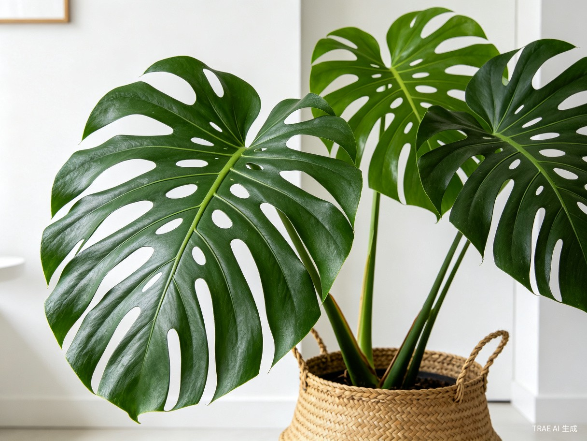

新手入门：选对第一盆植物
第一次养植物不知道选什么？推荐5种超级好养的室内植物，即使你经常忘记浇水也能活得好好的。从虎皮兰到绿萝，总有一款适合你。
系统学习室内植物养护知识，从入门到进阶

第一次养植物不知道选什么？推荐5种超级好养的室内植物，即使你经常忘记浇水也能活得好好的。从虎皮兰到绿萝，总有一款适合你。
从绿萝到龟背竹，精选10种2026年最值得入手的室内植物。附养护难度、光照水分需求详细对照表，帮你找到最适合自己的第一盆植物。

掌握见干见湿原理，看懂四季浇水频率对照表。深入解析浸盆法、滴灌法、喷淋法三种浇水方法，避开5个常见误区。

朝南朝北光照天差地别！教你判断家中光照类型，了解四种光照环境适合的植物，放在最合适的位置。

植物不长新叶？根从盆底钻出？识别5个换盆信号，选对花盆，掌握三种配土方案，6步操作轻松搞定换盆。

叶片发黄、长得慢？可能是缺肥了！了解氮磷钾作用、四季施肥频率、肥料类型对比，掌握薄肥勤施核心原则。

白粉病、蚜虫、红蜘蛛、小黑飞、介壳虫、叶斑病——6种最常见病虫害的识别指南和家庭防治方法。记住：防大于治，通风第一。

网红植物龟背竹怎么养？从开背条件到锦化品种，从浇水技巧到繁殖方法，一篇讲透。让这片热带风情成为你家的颜值担当。
多肉徒长、化水、黑腐怎么办？从配土到浇水，从休眠管理到繁殖技巧，帮你避开多肉养护中最常见的坑。